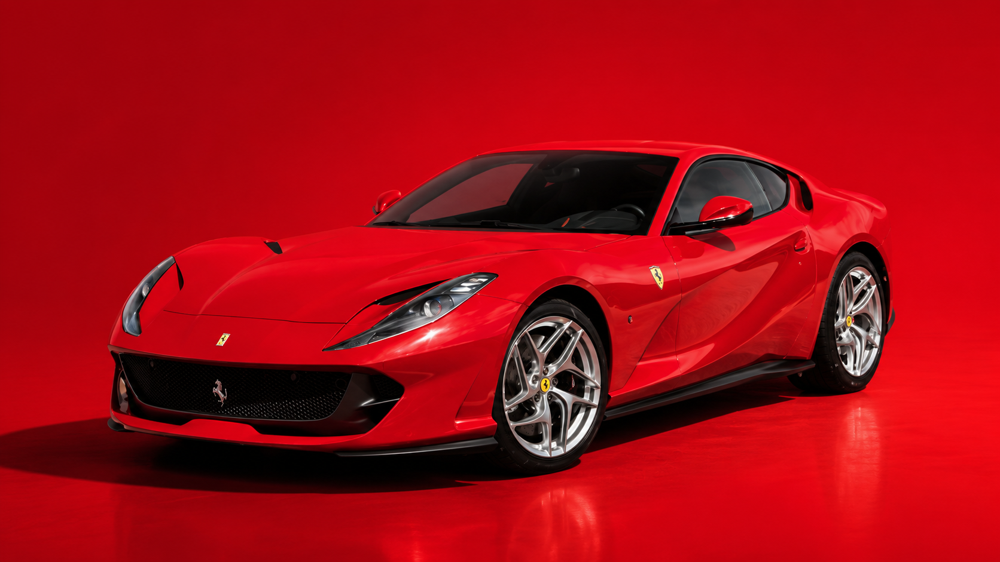
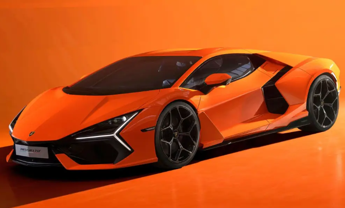
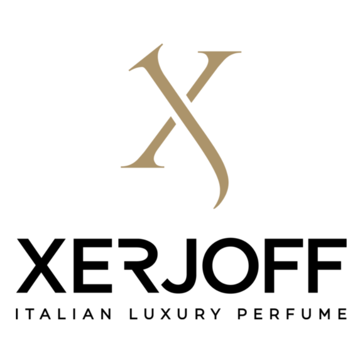
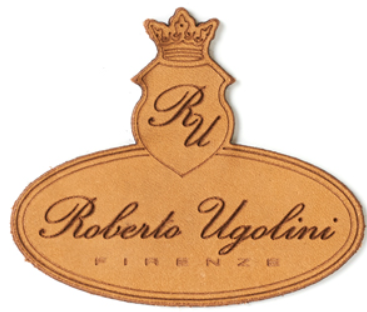
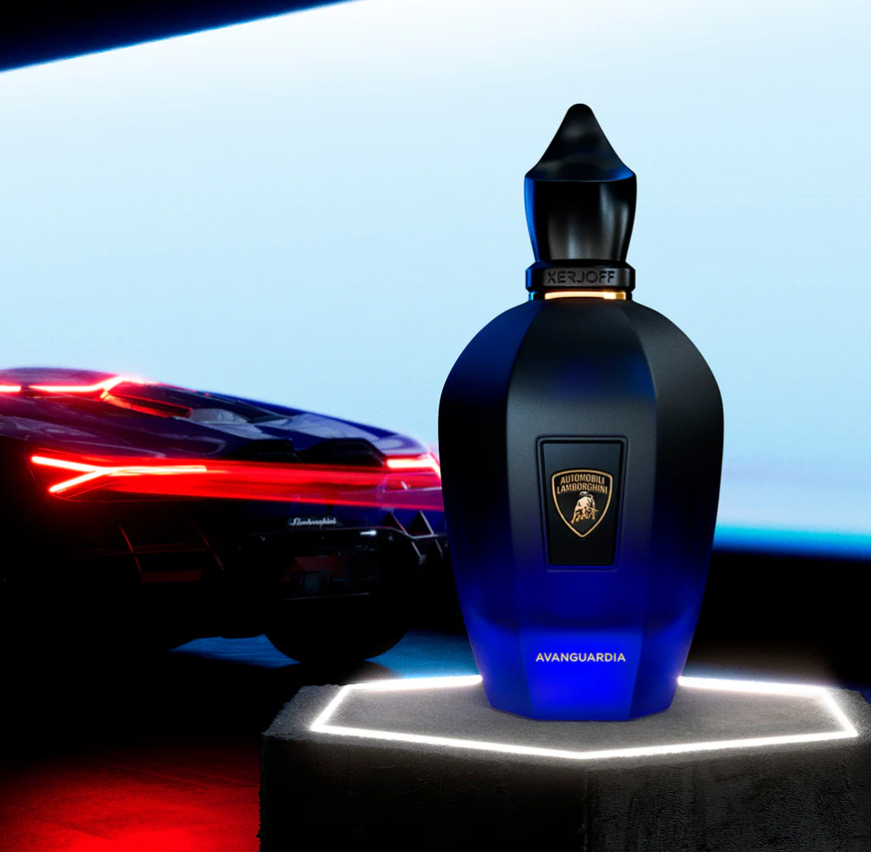
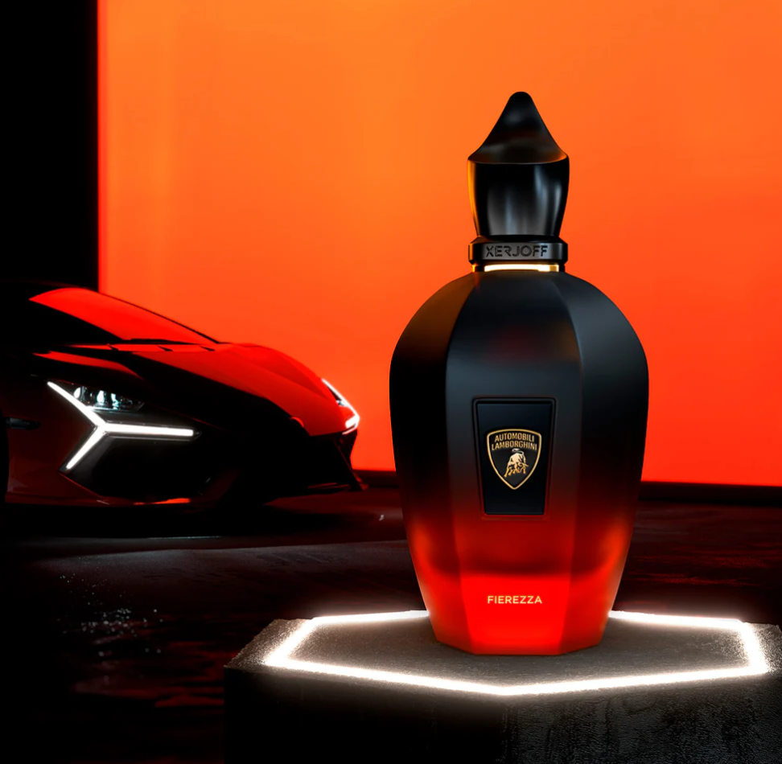
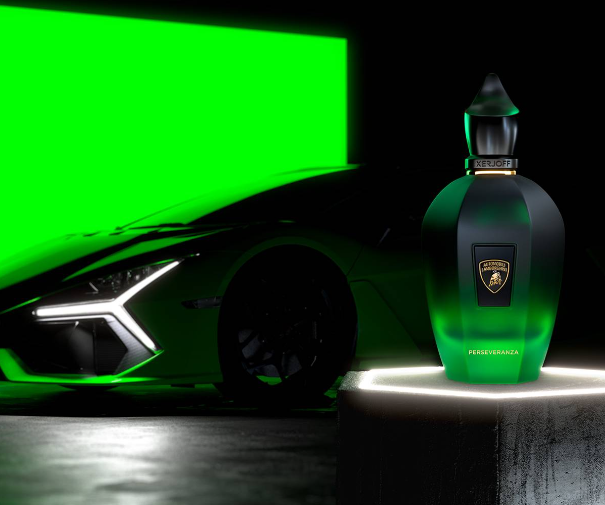

Ferrari
812 Superfast
Der Ferrari 812 steht für pure Emotion, einen kraftvollen Auftritt und klassischen Supersportwagen-Charakter.
- Land
- Italien
- Motor
- 6,5-Liter V12
- Leistung
- 800 PS
- Gewicht
- ca. 1.525 kg
- V-Max
- 340 km/h
- 0–100 km/h
- 2,9 s
Wenn Supersportwagen auf Nischendüfte treffen
Eine persönliche Webseite über zwei Leidenschaften: kraftvolle Autos und besondere Parfums.
Autos und Parfum haben für mich mehr gemeinsam, als man auf den ersten Blick denkt. Beide stehen für Stil, Charakter, Emotion und einen persönlichen Auftritt. Auf dieser Seite zeige ich meine Verbindung zwischen besonderen Fahrzeugen und hochwertigen Düften.

Ferrari
Der Ferrari 812 steht für pure Emotion, einen kraftvollen Auftritt und klassischen Supersportwagen-Charakter.

Lamborghini
Der Lamborghini Revuelto wirkt futuristisch, auffällig und kompromisslos. Sein Design passt perfekt zu einer modernen und starken Duftwelt.
Xerjoff gehört für mich zu den spannendsten Marken im Bereich Nischenparfum. Die Marke steht für hochwertige Flakons, auffällige Duftkompositionen und einen luxuriösen Auftritt. Genau deshalb passt Xerjoff gut zu einer Webseite, die Autos und Parfum miteinander verbindet.

Roberto Ugolini verbindet für mich Eleganz, Handwerk und Charakter. Die Düfte wirken stilvoll und besonders, ohne beliebig zu sein. Dadurch passt die Marke gut zu einem hochwertigen und persönlichen Auftritt.

Ein besonderes Highlight meiner Seite ist die Zurschaustellung der Zusammenarbeit zwischen Xerjoff und Lamborghini. Diese Collaboration zeigt sehr gut, wie eng Luxus, Design, Emotion und Performance miteinander verbunden sein können.
Avanguardia steht für eine moderne und markante Duftsignatur. Dieser Duft passt besonders gut zu einem Supersportwagen.

Kirsche · Davana · Mandarine
Geraniol · Patchouli · Rose · Schwarzes Veilchen
Tonkabohne · Styrax
Fierezza wirkt selbstbewusst, spannend und elegant. Der Duft passt für mich zu einem auffälligen Fahrzeugauftritt mit viel Präsenz.

Davana · Rosa Pfeffer · Szechuanpfeffer
Frangipani · Maritime Noten · Ambrette · Rosengeranie
Amber · Wildleder · Myrrhe
Perseveranza steht für Ausdauer, Zielstrebigkeit und technische Präzision. Der Duft wirkt für mich modern, würzig und kraftvoll.

Piment · Ingwer · Zitronatzitrone
Gewürznelke · Elemi-Harz · Vetiver
Tonkabohne · Zistrose · Styrax
In dieser SVG-Grafik zeige ich zwei Düfte aus meiner eigenen Parfumsammlung. Die Grafik verbindet meine persönliche Duftwelt mit dem technischen Pflichtbestandteil SVG.
Die SVG wurde aus einem eigenen Bild toolgestützt vektorisiert und anschließend als SVG-Datei in die Webseite eingebunden.

In dieser Canvas-Animation wird ein sportliches Auto auf einer dunklen Straße dargestellt. Eine bewegte Duftwolke verbindet das Auto-Thema mit der Parfumwelt meiner Webseite.
Das Canvas-Element wurde mit Unterstützung von ChatGPT erstellt. Verwendeter Prompt: „Erstelle mir für eine HTML5-Webseite zum Thema ‚Nawids Duft- und Autowelt‘ eine Canvas-2D-Animation mit JavaScript. Das Canvas soll die ID ‚duftCanvas‘ haben und 700 Pixel breit sowie 350 Pixel hoch sein. Die Animation soll ein sportliches Auto auf einer dunklen Straße zeigen. Im Hintergrund soll ein dunkler Verlauf verwendet werden. Die Straße soll eine goldene Fahrbahnlinie haben, passend zu einem luxuriösen Design in Schwarz, Anthrazit und Gold. Zusätzlich soll links ein kleiner Parfumflakon gezeichnet werden. Über dem Auto soll sich eine helle Duftwolke bewegen, die mit Kreisen und einer geschwungenen goldenen Linie dargestellt wird. Das Auto, die Räder, Fenster, Scheinwerfer, Straße, Duftwolke und der Flakon sollen direkt mit JavaScript im Canvas gezeichnet werden, ohne externe Bilder oder Bibliotheken. Verwende requestAnimationFrame für die Animation und kommentiere den Code verständlich.“
Der schönste Motorsound der Geschichte
Hört zu! Nawids Low-Budget Empfehlung des Tages.
Hier kann meine selbst erstellte Top-3-Liste zu Autos und Parfums heruntergeladen werden.
Top 3 Autos und Parfums herunterladen